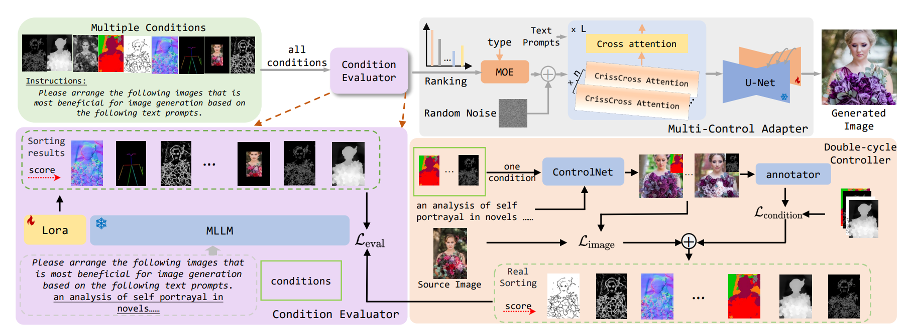

<!DOCTYPE html>
<html>
<head>
  <meta charset="utf-8">
  <meta name="description"
        content="DynamicControl">
  <meta name="keywords" content="condition selection, control, Text-to-Image">
  <meta name="viewport" content="width=device-width, initial-scale=1">
  <title>DynamicControl: Adaptive Condition Selection for Improved Text-to-Image Generation</title>

  <!-- Global site tag (gtag.js) - Google Analytics -->
  <script async src="https://www.googletagmanager.com/gtag/js?id=G-PYVRSFMDRL"></script>
  <script>
    window.dataLayer = window.dataLayer || [];

    function gtag() {
      dataLayer.push(arguments);
    }

    gtag('js', new Date());

    gtag('config', 'G-PYVRSFMDRL');
  </script>

  <link href="https://fonts.googleapis.com/css?family=Google+Sans|Noto+Sans|Castoro"
        rel="stylesheet">

  <link rel="stylesheet" href="./static/css/bulma.min.css">
  <link rel="stylesheet" href="./static/css/bulma-carousel.min.css">
  <link rel="stylesheet" href="./static/css/bulma-slider.min.css">
  <link rel="stylesheet" href="./static/css/fontawesome.all.min.css">
  <link rel="stylesheet"
        href="https://cdn.jsdelivr.net/gh/jpswalsh/academicons@1/css/academicons.min.css">
  <link rel="stylesheet" href="./static/css/index.css">
<!--  <link rel="icon" href="./static/images/favicon.svg">-->

  <script src="https://ajax.googleapis.com/ajax/libs/jquery/3.5.1/jquery.min.js"></script>
  <script defer src="./static/js/fontawesome.all.min.js"></script>
  <script src="./static/js/bulma-carousel.min.js"></script>
  <script src="./static/js/bulma-slider.min.js"></script>
  <script src="./static/js/index.js"></script>
</head>
<body>


<section class="hero">
  <div class="hero-body">
    <div class="container is-max-desktop">
      <div class="columns is-centered">
        <div class="column has-text-centered">
          <h1 class="title is-1 publication-title">DynamicControl: Adaptive Condition Selection for Improved Text-to-Image Generation</h1>
          <div class="is-size-5 publication-authors">
            <span class="author-block">
              <a href="https://scholar.google.com/citations?hl=zh-CN&user=gUJWww0AAAAJ">Qingdong He</a><sup>1</sup>,</span>
            <span class="author-block">
              <a href="https://scholar.google.com/citations?user=i5I-cIEAAAAJ&hl=zh-CN">Jinlong Peng</a><sup>1</sup>,</span>
            <span class="author-block">
              <a href="https://github.com/Pengchengpcx">Pengcheng Xu</a><sup>2</sup>,</span>
            <span class="author-block">
              <a href="https://byjiang.com/">Boyuan Jiang</a><sup>1</sup>,</span>
            <span class="author-block">
              <a href="https://scholar.google.com/citations?hl=zh-CN&user=3lMuodUAAAAJ">Xiaobin Hu</a><sup>1</sup>,</span>
            <span class="author-block">
              <a href="https://scholar.google.com/citations?user=2yj541QAAAAJ&hl=en">Donghao Luo</a><sup>1</sup>,</span>
            <span class="author-block">
              <a href="https://scholar.google.com.hk/citations?user=aqvFa1EAAAAJ&hl=zh-CN">Yong Liu</a><sup>1</sup></span>
            <span class="author-block">
              <a href="https://scholar.google.com/citations?user=xiK4nFUAAAAJ&hl=zh-CN">Yabiao Wang</a><sup>1</sup>,</span>
            <span class="author-block">
              <a href="https://scholar.google.com/citations?hl=zh-CN&user=fqte5H4AAAAJ">Chengjie Wang</a><sup>1</sup></span>
            <span class="author-block">
              <a href="https://scholar.google.com/citations?user=FL3ReD0AAAAJ&hl=zh-CN">Xiangtai Li</a><sup>2</sup>,</span>
            <span class="author-block">
              <a href="https://zhangzjn.github.io">Jiangning Zhang</a><sup>1</sup>,</span>
          </div>

          <div class="is-size-5 publication-authors">
            <span class="author-block"><sup>1</sup>Youtu Lab, Tencent</span>  </span>
            <span class="author-block"><sup>2</sup>Western University</span>
            <span class="author-block"><sup>4</sup>Nanyang Technological University</span>
          </div>


          <div class="column has-text-centered">
            <div class="publication-links">
              <!-- PDF Link. -->
              <span class="link-block">
                <a href="https://arxiv.org/abs/2405.15580"
                   class="external-link button is-normal is-rounded is-dark">
                  <span class="icon">
                      <i class="fas fa-file-pdf"></i>
                  </span>
                  <span>Paper</span>
                </a>
              </span>
<!--              <span class="link-block">-->
<!--                <a href="https://arxiv.org/abs/2312.06607"-->
<!--                   class="external-link button is-normal is-rounded is-dark">-->
<!--                  <span class="icon">-->
<!--                      <i class="ai ai-arxiv"></i>-->
<!--                  </span>-->
<!--                  <span>arXiv</span>-->
<!--                </a>-->
<!--              </span>-->
              <!-- Code Link. -->
              <span class="link-block">
                <a href="https://github.com/hithqd/DynamicControl"
                   class="external-link button is-normal is-rounded is-dark">
                  <span class="icon">
                      <i class="fab fa-github"></i>
                  </span>
                  <span>Code</span>
                  </a>
            </div>
          </div>
        </div>
      </div>
    </div>
  </div>
</section>


<section class="section">
  <div class="container is-max-desktop">
    <!-- Abstract. -->
    <div class="columns is-centered has-text-centered">
      <div class="column is-four-fifths">
        <h2 class="title is-3">Abstract</h2>
        <div class="content has-text-justified">
          <p>
            To enhance the controllability of text-to-image diffusion
models, current ControlNet-like models have explored various control signals to dictate image attributes. However, existing methods either handle conditions inefficiently or use a
fixed number of conditions, which does not fully address the
complexity of multiple conditions and their potential conflicts. This underscores the need for innovative approaches
to manage multiple conditions effectively for more reliable
and detailed image synthesis. To address this issue, we
propose a novel framework, DynamicControl , which supports dynamic combinations of diverse control signals, allowing adaptive selection of different numbers and types of
conditions. Our approach begins with a double-cycle controller that generates an initial real score sorting for all input conditions by leveraging pre-trained conditional generation models and discriminative models. This controller
evaluates the similarity between extracted conditions and
input conditions, as well as the pixel-level similarity with
the source image. Then, we integrate a Multimodal Large
Language Model (MLLM) to build an efficient condition
evaluator. This evaluator optimizes the ordering of conditions based on the double-cycle controller’s score ranking.
Our method jointly optimizes MLLMs and diffusion models,
utilizing MLLMs’ reasoning capabilities to facilitate multicondition text-to-image (T2I) tasks. The final sorted conditions are fed into a parallel multi-control adapter, which
learns feature maps from dynamic visual conditions and
integrates them to modulate ControlNet, thereby enhancing control over generated images. Through both quantitative and qualitative comparisons, DynamicControl demonstrates its superiority over existing methods in terms of
controllability, generation quality and composability under
various conditional controls.
          </p>
        </div>
      </div>
    </div>
  </div>
</section>

<section class="section">
  <div class="container is-max-desktop">

    <div class="columns is-centered">

      
    <!-- Animation. -->
    <div class="columns is-centered has-text-centered">
      <div class="column is-four-fifths">
        <!-- Re-rendering. -->
        <h2 class="title is-3" style="background: linear-gradient(to right,  indigo, indigo, skyblue,indigo, indigo); -webkit-background-clip: text; -webkit-text-fill-color: transparent;"> Demo</h2>
<!--         <h3 class="title is-4">Demo</h3> -->
        <div class="content has-text-justified">
<!--           <p>
            Using <span class="dnerf">Nerfies</span>, you can re-render a video from a novel
            viewpoint such as a stabilized camera by playing back the training deformations.
          </p> -->
        </div>
        <div class="content has-text-centered">
          <video id="replay-video"
                 controls
                 muted
                 preload
                 playsinline
                 width="75%">
            <source src="static/images/demo.mp4"
                    type="video/mp4">
          </video>
        </div>
        <!--/ Re-rendering. -->

      </div>
    </div>
    <!--/ Animation. -->


  </div>
</section>
  
<section class="hero is-small">
  <div class="hero-body">
    <div class="container is-max-desktop">
      <h2 class="title is-3">Method</h2>
      <div class="item">
        <!-- Your image here -->
        
       </h2>
     </div>
    </div>
  </div>
</div>
</div>
</section>


<section class="section">
  <div class="container is-max-desktop">
    <!-- Qualitative Results. -->
    <div class="columns is-centered">
      <div class="column is-full-width">
        <h2 class="title is-3">Qualitative Results</h2>

        <!-- Interpolating. -->
        <h3 class="title is-4">Qualitative results of our method on open-world</h3>
        <div class="content has-text-justified">
          <p>
          </p>
        </div>
        <div class="column is-center has-text-centered">
            
        </div>

        <h3 class="title is-4">Qualitative results of our methods with text queries</h3>
        <div class="content has-text-justified">
          <p>
          </p>
        </div>
        <div class="column is-center has-text-centered">
            
        </div>

        <div class="column is-center has-text-centered">
            
        </div>
        
      </div>
    </div>
  </div>
</section>


<section class="section">
  <div class="container is-max-desktop">
<!-- Quantitative Results. -->
    <div class="columns is-centered">
      <div class="column is-full-width">
        <h2 class="title is-3">Quantitative Results</h2>
        <div class="item">
         </h2>
        <!-- Interpolating. -->
        <h3 class="title is-4">3D scene understanding results on the ScanNet200 validation set</h3>
        <div class="content has-text-justified">
          <p>
          </p>
        </div>
        <div class="column is-center has-text-centered">
            
        </div>

        <h3 class="title is-4">3D scene understanding results on the nuScenes validation set</h3>
        <div class="content has-text-justified">
          <p>
          </p>
        </div>
        <div class="columns is-centered">
          <div class="column is-center has-text-centered">
              
          </div>
        </div>
      </div>
    </div>

  </div>
</section>


<section class="section" id="BibTeX">
  <div class="container is-max-desktop content">
    <h2 class="title">BibTeX</h2>
    <pre><code>
@article{tai2024open,
  title={Open-Vocabulary SAM3D: Understand Any 3D Scene},
  author={Tai, Hanchen and He, Qingdong and Zhang, Jiangning and Qian, Yijie and Zhang, Zhenyu and Hu, Xiaobin and Wang, Yabiao and Liu, Yong},
  journal={arXiv preprint arXiv:2405.15580},
  year={2024}
}
    </code></pre>
  </div>
</section>


<footer class="footer">
  <div class="container">
    <div class="columns is-centered">
      <div class="column is-8">
        <div class="content">
          <p>
            This website is licensed under a <a rel="license"
                                                href="http://creativecommons.org/licenses/by-sa/4.0/">Creative
            Commons Attribution-ShareAlike 4.0 International License</a>.
          </p>
          <p>
            We borrow the <a
              href="https://github.com/nerfies/nerfies.github.io">source code</a> for our website.
            We sincerely appreciate Nerfies authors for their awesome templates.
          </p>
        </div>
      </div>
    </div>
  </div>
</footer>

</body>
</html>
